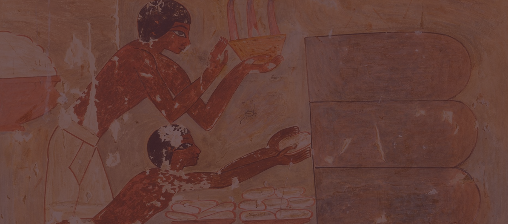
달콤함이 만들어 온 시간,
디저트의 이야기
고대, 달콤함의 시작
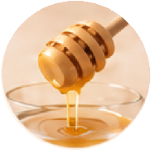
꿀과 과일,
최초의 디저트
설탕이 없던 시절,
사람들은 꿀과 잘 익은 과일,
말린 열매로 단맛을 즐겼다.
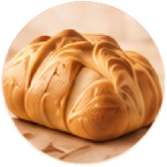
고대 이집트의
달콤한 빵
꿀과 과일을 넣은 빵과 과자 형태의 음식이 만들어졌다.
빵을
굽는 기술이 발전하면서
오늘날 케이크와 제과의
초기 형태를 찾아볼 수 있다.
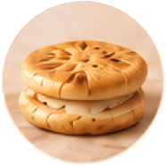
케이크의 조상,
플라쿠스
고대 그리스에서는 밀가루와 치즈,
견과류, 꿀을 활용한 납작한
케이크를 즐겼다.
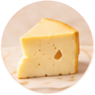
고대 로마의
치즈 케이크
로마의 농업서에는 치즈와 꿀,
밀가루 반죽을 겹쳐 구운
'플라켄타(Placenta)'라는 음식의 조리법이 기록되어 있다.
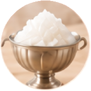
차가운 디저트의
등장
페르시아의 얼음 저장 시설과
눈을 활용한 차가운 음료·디저트가
발전했다.
중세, 디저트의 다양화
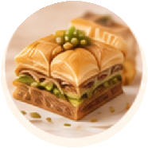
꿀과 시럽을 입힌
페이스트리
중동과 지중해 지역에서
얇은 반죽을 겹겹이 쌓고 꿀이나
설탕 시럽을 입히는
과자 문화가 발전했다.
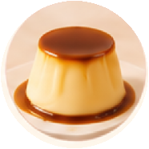
커스터드와
푸딩의 발전
달걀과 우유를 익혀 굳히는 조리법이
발전하면서,
부드러운 커스터드 형태의
디저트가 자리 잡았다.
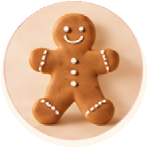
향신료와
진저브레드
꿀과 생강, 계피 등
향신료를 넣은 과자가 인기를 얻었다.
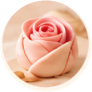
설탕 공예와
디자인
아몬드 가루와 설탕을 섞어 만든
마지팬이 유럽의 연회와 축제에서
장식용 과자로 사랑받았다.
설탕은 단맛뿐 아니라 예술적인
장식
재료로도 사용되기 시작했다.
근대, 디저트의 황금기
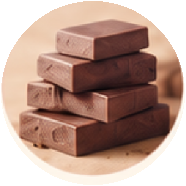
초콜릿의
유럽진출
아메리카 대륙에서 유럽으로
카카오가 전해지면서
초콜릿 음료가 유럽의 상류층
사이에서 인기를 얻었다.
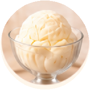
아이스크림의
대중화로 가는 시작
얼음과 과일을 활용한
차가운 디저트가 유럽의 궁정과
상류층에서 인기를 얻었다.
이후 우유와 크림을 이용한
아이스크림 제조법이
발전했다.
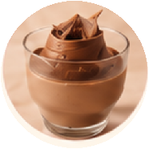
무스와 크림
디저트의 탄생
달걀 흰자와 크림 등을 활용해
공기를 머금은 가벼운 질감의
디저트가 발전했다.
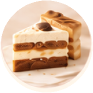
베이킹 기술의
혁신
베이킹파우더와 오븐 기술이
발전하면서 케이크를
더욱 부드럽고 일정하게
만들 수 있게 되었다.
현대, 예술이 된 디저트
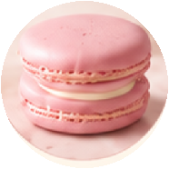
디저트의 대량 생산 시대
냉장·냉동 기술과
식품 제조 기술이 발전하면서
디저트를 대량으로 생산하고
유통할 수 있게 되었다.
디저트는 특별한 날의 음식에서
일상적인 간식으로 변화했다.
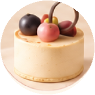
디저트, 하나의 예술이 되다
맛뿐 아니라
색감, 모양, 질감, 플레이팅까지
중요해졌다.
디저트는 셰프의 개성을 표현하는
예술이자 사진과 SNS를 통해
공유되는 하나의 문화로 발전했다.
WHAT MADE DESSERTS SWEETER?
디저트의 발전을 이끈 네 가지 변화
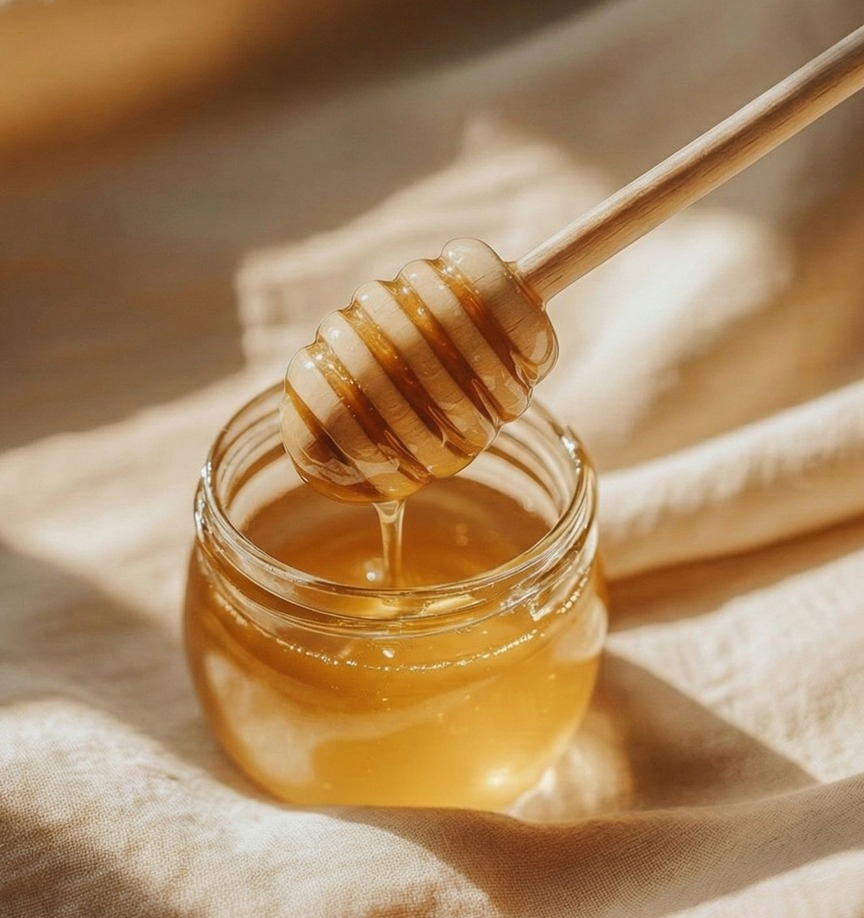
달콤한 재료
꿀과 과일 대신 설탕의 생산과 유통이 확대되면서
디저트는 더욱 다양한고 풍부한 단맛을 갖게 되었습니다
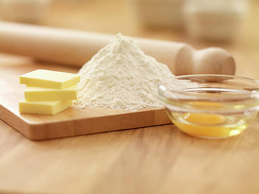
제과 기술
오븐과 베이킹 도구, 반죽 기술의 발전은 케이크를 폭신하게 만들고,
페이스트리를 여러 겹으로 부풀리는 등 새로운 식감을
탄생시켰습니다
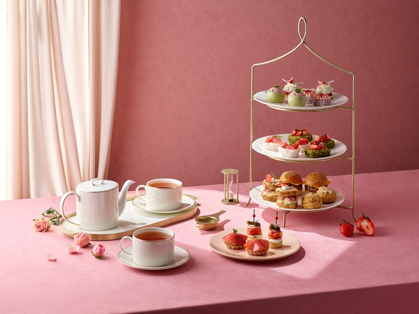
디저트 문화
디저트는 특별한 날을 기념하는 음식에서
일상의 작은 즐거움으로 자리 잡았습니다.
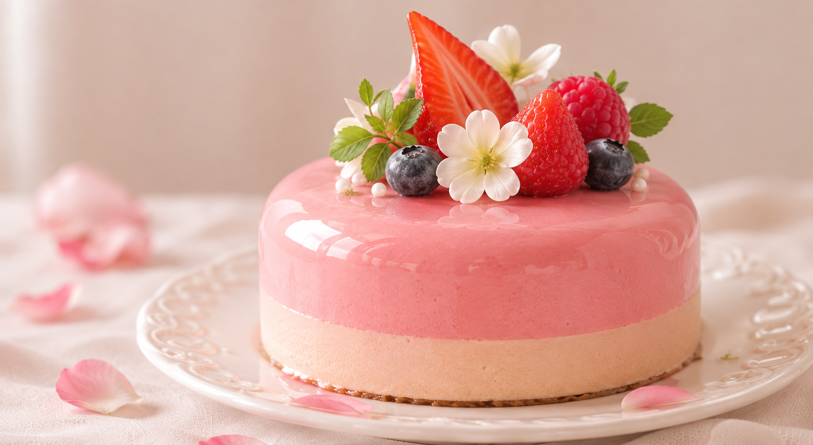
예술이 된 디저트
디저트는 하나의 예술로서, 보는 즐거움까지 선사하며
우리의 일상을 더욱 특별하게 만들어 줍니다.
SWEET HISTORY
DESSERT
HISTORY
우리가 사랑하는 디저트의
탄생과 비하인드 스토리
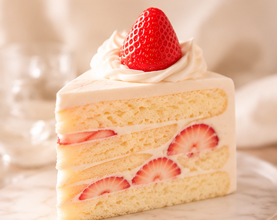
CAKE
CAKE
달콤한 축하의 상징, 케이크의 시작
유래와 발전
케이크의 기원은 고대 이집트와 그리스·로마 시대의 달콤한 빵에서
시작되었다.
밀가루에 꿀과 과일, 견과류를 더해 만들었으며,
이후 제과 기술과 오븐의 발전으로 오늘날처럼 부드럽고 폭신한
케이크가 탄생했다.
BEHIND THE STORY
케이크는 처음부터 생일 축하 음식은 아니었다.
고대에는 신에게
바치는 제물이나 종교 의식에 사용되었으며,
오늘날의 생일
케이크와 촛불 문화는 여러 시대의 축하 관습이 합쳐져 만들어진
전통이다.
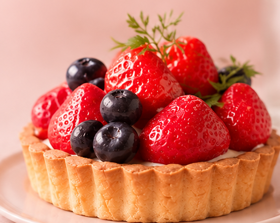
TART
TART
작은 반죽 위에 담아낸 달콤한 예술
유래와 발전
타르트의 역사는 오래전부터 이어져왔으며,
14세기 영국의 요리 문헌 《The Forme of Cury》에도 조리법이
기록되어 있다.
초기에는 고기와 달걀, 치즈 등을 넣은 짭짤한
요리가 많았지만,
과일과 커스터드를 활용하면서 오늘날과 같은
디저트로 발전했다.
BEHIND THE STORY
초기 타르트 반죽은 단순한 바닥이 아닌 속재료를 담고 조리 중 보호하는 그릇 역할을 했다. 두껍고 단단한 반죽을 용기처럼 사용했던 조리법이 오늘날 타르트의 형태에도 영향을 주었다.
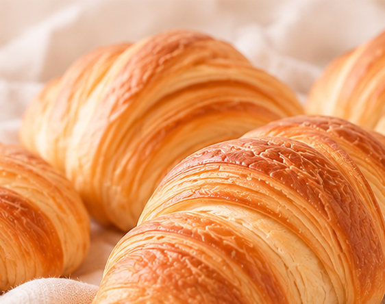
PASTRY
PASTRY
겹겹이 쌓인 반죽이 만들어낸 바삭함
유래와 발전
페이스트리의 기원은 고대 지중해 지역의 밀가루 반죽 요리에서 찾아볼
수 있다.
중세 유럽에서는 밀가루와 물, 지방을 활용한 여러 반죽 기법이
발전했다.
이후 반죽 사이에 버터를 넣고 반복해서 접는 기술이 정교해지면서,
오늘날 페이스트리의 특징인 얇고 바삭한 층이 형성되었다.
BEHIND THE STORY
페이스트리 특유의 겹겹이 쌓인 층은 반죽과 버터가 오븐 안에서
만들어내는 수증기의 원리를 이용한다.
가열 과정에서 수증기가 층 사이를 밀어 올리면서 반죽이 부풀고,
특유의 가볍고 바삭한 식감이 완성된다.